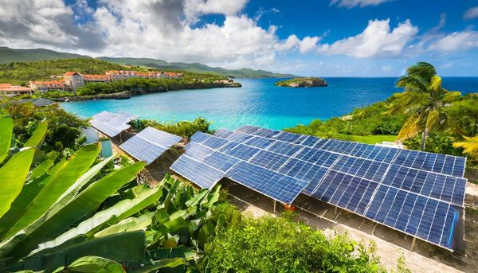
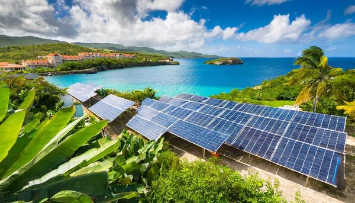

Monthly Budget Summary (USD)
| Expense | Single (Modest) | Single (Comfortable) | Family of 4 (Modest) | Family of 4 (Comfortable) |
|---|---|---|---|---|
| Rent | $500 | $1,000 | $900 | $2,000 |
| Electricity | $74 | $167 | $148 | $250 |
| Water | $30 | $44 | $50 | $60 |
| Internet | $50 | $74 | $60 | $100 |
| Mobile | $37 | $56 | $74 | $111 |
| Groceries | $400 | $600 | $1,000 | $1,500 |
| Dining out | $100 | $300 | $200 | $500 |
| Transport | $74 | $259 | $259 | $500 |
| Healthcare | $100 | $150 | $250 | $400 |
| Education | — | — | $300 | $1,000 |
| Entertainment | $74 | $200 | $150 | $300 |
| Household help | — | $148 | — | $592 |
| Miscellaneous | $100 | $200 | $200 | $300 |
| TOTAL (USD/mo) | ~$1,539 | ~$3,198 | ~$3,591 | ~$7,613 |
All amounts in USD. XCD conversion: multiply by 2.70. Ranges reflect location and lifestyle choices. Rodney Bay / Cap Estate are the most expensive areas. Average local net salary: ~USD $830/month for context.
Cost of Living Comparison (Numbeo, Jan 2026)
Saint Lucia’s cost of living is approximately 21.8% lower than the United States overall. Rent is 72–74% lower than US averages. Groceries are approximately 5.7% cheaper than in the US, though imported goods (dairy, meat, cheese) cost more. Local produce from markets offers 20–30% savings over supermarkets.
| Expense Category | Single Person (USD/mo) | Couple (USD/mo) | Family of 4 (USD/mo) |
|---|---|---|---|
| Total incl. rent | $1,500–$2,500 | ~$2,500 | $3,200–$4,000 |
| Total excl. rent | ~$883 (EC$2,387) | — | ~$3,192 (EC$8,628) |
| Groceries | ~$400 | ~$550 | ~$900–$1,250 |
| Utilities (elec/water/garbage, 85m²) | ~$115/month (up to $150–$250 with A/C) | ||
| Internet | $45–$80/month (Flow, Digicel) | ||
Rent by Location (Numbeo/Expat Data, 2026)
| Location | 1-Bedroom (USD) | 3-Bedroom (USD) |
|---|---|---|
| Castries city centre | $510 | $890 |
| Castries outskirts | $325 | $650 |
| Rodney Bay (primary expat area) | $740–$1,110 | Higher |
| Rural areas (e.g. Dennery) | From $370 | Lower |
Dining Costs (2026)
| Dining Type | Cost (USD) |
|---|---|
| Local food stall / “cook shop” | $3–$7 |
| Inexpensive restaurant (meal) | $7–$12 |
| Mid-range restaurant (2 people) | $40–$60 |
Sources: Numbeo Cost of Living Jan 2026, Global Citizens Solutions, Nomad Capitalist, CBF Citizens, Government of Saint Lucia Budget 2025/26.
Housing & Rent

Rodney Bay / Gros Islet (Prime Expat Area)
| Property Type | Monthly (XCD) | Monthly (USD) |
|---|---|---|
| 1-bedroom apartment | $2,000–$3,000 | $735–$1,100 |
| 2-bedroom apartment | $2,700–$4,050 | $1,000–$1,500 |
| 3-bedroom townhouse | $4,050–$6,750 | $1,500–$2,500 |
| 3-bedroom house | $5,400–$8,100 | $2,000–$3,000 |
| 4-bedroom villa (Cap Estate) | $6,500–$13,500 | $2,400–$5,000 |
Castries (Capital City)
| Property Type | Monthly (XCD) | Monthly (USD) |
|---|---|---|
| 1-bed apartment (city centre) | $1,350–$1,800 | $500–$670 |
| 1-bed apartment (outside centre) | $875–$1,350 | $325–$500 |
| 2-bed apartment (city centre) | $1,800–$2,700 | $670–$1,000 |
| 3-bed apartment (city centre) | $2,400–$3,375 | $890–$1,250 |
| 3-bedroom house | $2,700–$5,400 | $1,000–$2,000 |
Soufriere (Southwest, near the Pitons)
| Property Type | Monthly (XCD) | Monthly (USD) |
|---|---|---|
| 1-bedroom apartment | $1,080–$1,620 | $400–$600 |
| 2-bed apartment/house | $1,620–$2,700 | $600–$1,000 |
| 3-bedroom house | $2,160–$4,050 | $800–$1,500 |
Vieux Fort (South, near Hewanorra Airport)
| Property Type | Monthly (XCD) | Monthly (USD) |
|---|---|---|
| 1-bedroom apartment | $810–$1,350 | $300–$500 |
| 2-bed apartment/house | $1,350–$2,160 | $500–$800 |
| 3-bedroom house | $1,620–$2,700 | $600–$1,000 |
Rental Tips
- Rodney Bay commands the highest rents — restaurants, nightlife, beach proximity
- Vieux Fort is the most affordable area; less developed but growing fast
- Furnished apartments typically cost 20–30% more than unfurnished
- Leases are typically 6–12 months with 1–2 months deposit plus first month
- Utilities are usually separate from rent
- Cap Estate and Rodney Bay are the most popular expatriate locations
Real Estate Purchase Prices

Property Prices by Type
| Property Type | Price (XCD) | Price (USD) |
|---|---|---|
| Small starter home (rural) | $405,000+ | $150,000+ |
| 2-bed condo (entry-level) | $540,000–$810,000 | $200,000–$300,000 |
| 3-bed villa (mid-range) | $1,080,000–$1,350,000 | $400,000–$500,000 |
| Waterfront townhouse | $1,755,000–$1,890,000 | $650,000–$700,000 |
| Luxury condo (The Landings) | $2,295,000–$5,400,000 | $850,000–$2,000,000 |
| Beachfront luxury villa | $2,700,000–$16,200,000+ | $1,000,000–$6,000,000+ |
Land Prices by Area (Per ft²)
| Location | XCD / ft² | USD / ft² |
|---|---|---|
| Rodney Bay (premium) | $27–$540+ | $10–$200+ |
| Cap Estate | $22–$81 | $8–$30 |
| Marigot Bay | $20–$95 | $7.50–$35 |
| Castries | $11–$540 | $4–$200 |
| Soufriere | $16–$54 | $6–$20 |
| Vieux Fort | $11–$32 | $4–$12 |
| Laborie | $16–$27 | $6–$10 |
| Dennery (East Coast) | $11–$16 | $4–$6 |
| Choiseul | $8–$22 | $2.80–$8 |
| Monchy (rural) | $8–$22 | $3–$8 |
Construction Costs (Building New, 2025)
| Item | Cost (XCD) | Cost (USD) |
|---|---|---|
| Standard construction per ft² | $300 | $111 |
| Mid-range per ft² | $300–$400 | $111–$148 |
| Luxury per ft² | $450+ | $167+ |
| 2,000 ft² standard home (total) | $600,000–$1,300,000 | $222,000–$481,000 |
| Planning permission | $3,000–$7,500 | $1,111–$2,778 |
| Architectural services | 5–10% of construction cost | |
| Contractor fees | 10–20% of total project | |
Transaction Costs for Foreign Buyers
| Item | Cost |
|---|---|
| Alien Landholding License | Required (government fee applies) |
| Stamp Duty | ~2% of property value |
| Legal fees | 1.5–3% of purchase price |
| Real estate agent commission | 5% (usually paid by seller) |
| Mortgage interest rate (typical) | ~7.75% fixed, 20-year |
Foreign Buyers
Foreigners need an Alien Landholding License to purchase property (unless buying through the CBI program). Budget approximately 10–15% above purchase price for total transaction costs. No capital gains tax on property sales.
Utilities
Electricity (LUCELEC — Sole Provider)
 

| Usage Tier | Rate / kWh (XCD) | Rate / kWh (USD) |
|---|---|---|
| First 1–180 kWh/month | $0.855–$0.914 | $0.32–$0.34 |
| Above 181 kWh/month | $0.905–$0.964 | $0.34–$0.36 |
| Monthly Bill Estimate | XCD | USD |
|---|---|---|
| Small apartment (no A/C) | $150–$250 | $55–$93 |
| Medium apartment (some A/C) | $250–$500 | $93–$185 |
| Large house (regular A/C) | $500–$810 | $185–$300 |
Water (WASCO)
| Household Size | Monthly (XCD) | Monthly (USD) |
|---|---|---|
| Small household | $80–$120 | $30–$45 |
| Medium household | $120–$160 | $45–$60 |
| Large household / garden use | $160–$270 | $60–$100 |
WASCO Water Supply Concerns (2025–2026)
- Dry taps Oct–Nov 2025: Parts of the island experienced water outages due to drought conditions and ageing infrastructure. Water storage tanks are essential for homes
- John Compton Dam pipeline replacement: US$22.8M CDB loan approved for a 5km pipeline replacement. Construction expected to begin Q2 2026
- Patience Water Supply Redevelopment: Major infrastructure project in progress, expected completion December 2026
Advice: All homes (particularly in elevated or southern areas) should have a water storage tank (500–1,000 gallon minimum). Water pressure varies by area and time of day.
Internet (Flow & Digicel)

| Plan | Monthly (XCD) | Monthly (USD) |
|---|---|---|
| Basic broadband (~50 Mbps) | $120–$162 | $45–$60 |
| Mid-range (~100–200 Mbps) | $162–$270 | $60–$100 |
| High-speed fibre (250 Mbps) | $367 | $136 |
| Premium fibre (400+ Mbps) | $405–$540+ | $150–$200+ |
| Starlink satellite (unlimited) | $216 | $80 |
Mobile Phone Plans
| Plan | Monthly (XCD) | Monthly (USD) |
|---|---|---|
| Digicel 30-Day Prime More (40 GB) | $149 | $55 |
| Digicel 30-Day Prime Extra (60 GB) | $256 | $95 |
| Flow 30-Day (12 GB) | $100 | $37 |
| Average monthly plan (Numbeo) | $101 | $37 |
Electricity is Expensive
Saint Lucia's electricity rates are among the highest in the Caribbean due to diesel generation. A/C is the biggest cost driver. Use ceiling fans and natural ventilation. Solar panels are increasingly popular — LUCELEC offers a net-billing programme for rooftop solar. Flow raised broadband prices by ~EC$3/month in May 2025.
Food & Dining

Grocery Prices (Numbeo, Jan 2026)
| Item | Price (XCD) | Price (USD) |
|---|---|---|
| Milk (1 litre) | $6.03 | $2.23 |
| White bread (loaf) | $3.67 | $1.36 |
| White rice (1 lb) | $2.06 | $0.76 |
| Eggs (dozen) | $11.32 | $4.19 |
| Chicken fillets (1 lb) | $15.46 | $5.73 |
| Beef round (1 lb) | $21.35 | $7.91 |
| Bananas (1 lb) | $2.21 | $0.82 |
| Tomatoes (1 lb) | $10.24 | $3.79 |
| Potatoes (1 lb) | $5.13 | $1.90 |
| Onions (1 lb) | $3.24 | $1.20 |
| Domestic beer (Piton, 0.5L) | $5.79 | $2.14 |
| Bottled water (1.5L) | $2.79 | $1.03 |
| Bottle of wine (mid-range) | $33.50 | $12.41 |
Monthly Grocery Budget
| Category | Monthly (XCD) | Monthly (USD) |
|---|---|---|
| Single person (budget, local food) | $945–$1,350 | $350–$500 |
| Single person (mixed local/imported) | $1,350–$1,890 | $500–$700 |
| Family of 4 (budget) | $2,430–$3,375 | $900–$1,250 |
| Family of 4 (comfortable) | $3,375–$4,725 | $1,250–$1,750 |
Restaurant Prices
| Dining Level | Per Person (XCD) | Per Person (USD) |
|---|---|---|
| Local street food / food stall | $10–$20 | $3.70–$7.40 |
| Inexpensive restaurant | $21 | $7.80 |
| Mid-range restaurant | $50–$70 | $18.50–$25.90 |
| Mid-range (2-person, 3-course) | $200 | $74 |
| Fine dining (per person) | $80–$215 | $30–$80 |
| Cappuccino | $9.40 | $3.48 |
| Domestic draft beer (pint) | $7.50 | $2.78 |
Save Money on Food
Shop at Castries Central Market for fresh local produce at a fraction of supermarket prices. Buy fish from fishermen at Dennery or Anse la Raye. Local fruits (mangoes, bananas, breadfruit, dasheen, plantain, coconut) are abundant and cheap. Imported goods (cereal, cheese, processed foods, wine) cost 50–100% more than in North America.
VAT relief (July 2026): VAT will be removed from 70+ food items effective July 2026, significantly reducing grocery costs on essential items including basic staples, fruits, vegetables, and household necessities.
Transportation

Fuel Prices
| Item | Price (XCD) | Price (USD) |
|---|---|---|
| Gasoline per litre | $3.63–$4.18 | $1.34–$1.55 |
| Gasoline per US gallon (approx) | $13.74–$15.82 | $5.09–$5.86 |
Public Minibuses
| Route Type | Fare (XCD) | Fare (USD) |
|---|---|---|
| Short local trip | $2.50–$3.50 | $0.93–$1.30 |
| Longer inter-town route | $5.00–$8.00 | $1.85–$2.96 |
Taxi Fares (Unmetered — Agree in Advance)
| Route | Fare (XCD) | Fare (USD) |
|---|---|---|
| Short trip within town | $27–$68 | $10–$25 |
| Hewanorra (UVF) to Rodney Bay | $216–$270 | $80–$100 |
| Hewanorra (UVF) to Castries | $189–$243 | $70–$90 |
| Hewanorra (UVF) to Soufriere | $162–$216 | $60–$80 |
| George F.L. Charles (SLU) to Rodney Bay | $54–$68 | $20–$25 |
Car Rental
| Duration | Cost (XCD) | Cost (USD) |
|---|---|---|
| Daily (economy) | $162–$216 | $60–$80 |
| Daily (SUV/larger) | $189–$270 | $70–$100 |
| Weekly (economy) | $810–$1,350 | $300–$500 |
| Monthly (economy) | $2,430–$4,050 | $900–$1,500 |
Car Purchase
| Vehicle Type | Price (XCD) | Price (USD) |
|---|---|---|
| Used car (basic, e.g. Honda Fit) | $27,000+ | $10,000+ |
| Used car (mid-range, e.g. Honda CR-V) | $54,000–$108,000 | $20,000–$40,000 |
| New vehicle (imported) | $81,000–$162,000+ | $30,000–$60,000+ |
Public Minibus System
Minibuses are the primary form of public transit in Saint Lucia, operating on a “full-and-go” basis (no fixed schedule). Look for green number plates with “M” prefix. Flag down with a hand wave; concrete bus stops mark regular points. Minibuses depart from the Castries Transport Hub (behind the Central Market) for all routes.
| Detail | Information |
|---|---|
| Fare range | EC$1.25–$10 depending on route |
| Castries to Rodney Bay | EC$2.50 |
| Castries to Gros Islet | EC$3.50 |
| Castries to Vieux Fort | EC$8.00–$10.00 |
| Castries to Soufriere | EC$9.00–$10.00 |
| Castries to Dennery | EC$6.00–$7.00 |
| Operating hours | ~6AM–10PM (long-distance routes end 4–5PM); very limited Sunday/holiday service |
| Payment | Cash only (exact change helpful). Pay the driver or conductor when exiting |
| Frequency | Northern routes (Castries–Rodney Bay): every 5–15 min. Southern/rural: every 30–60 min |
Minibus Tips for New Arrivals
- Tell the driver your destination when boarding — the driver will alert you when to exit
- Say “stopping” or knock on the roof/window when approaching your stop
- Minibuses play loud music (soca, dancehall) — this is normal and part of the culture
- Buses fill up quickly during rush hour (7–8:30 AM, 4–5:30 PM). Expect standing room
- There is no Sunday bus service to most destinations; plan accordingly or arrange taxi
- Route numbers are not consistently displayed — ask the driver if the bus goes to your destination before boarding
Taxis & Ride-Sharing
Licensed taxis have light blue plates with “TX” prefix. Taxis are NOT metered — always agree the fare before starting your trip. Payment is cash only in most cases.
| Route | Fare (XCD) | Fare (USD) |
|---|---|---|
| UVF (Hewanorra) to Castries | ~$230 | ~$85 |
| Castries to Soufriere | ~$245 | ~$90 |
Ride-Sharing: No Uber/Lyft
Uber and Lyft do not operate in Saint Lucia. The Allez app is a local alternative offering GPS-based, cashless ride-hailing, though coverage is mainly in the northern part of the island. Taxis are abundant in Castries but scarce in rural areas.
Taxi Tips for Residents
- Always agree the fare before getting in. There are no meters; fares are based on government-set zone rates but negotiation is common
- Licensed taxis: Light blue plates with “TX” prefix. Use only licensed taxis for safety
- Hotel taxis are typically 20–30% more expensive than roadside pickups but more reliable
- Airport transfers: Pre-book through your hotel or use the official taxi dispatcher at the Hewanorra Airport exit
- Night surcharge: Expect 20–50% higher fares after 10 PM
- Tipping: Not mandatory for taxi drivers, but rounding up the fare is appreciated
- Long-term arrangements: Residents often build a relationship with a regular taxi driver who offers better rates. Ask neighbours or colleagues for recommendations
Driving Licence & Requirements
| Requirement | Details |
|---|---|
| Temporary driving permit | EC$54 (US$20), valid 3 months. Required for all visitors and new residents. Obtain from rental agencies, police stations, or the airport |
| Local driving licence | Apply at the Licensing Authority (Sans Souci, Castries) after residency. Written test + practical driving test. Licence valid 1–3 years |
| International Driving Permit (IDP) | Accepted alongside your national licence for the first 3 months of stay. After 3 months, a local licence or temporary permit is required |
| Minimum driving age | 17 years |
| Licence classes | Class A (motorcycle), Class B (car up to 3,500 kg), Class C (truck), Class D (bus), Class E (heavy combination) |
| Driving side | Left-hand traffic (British system). Most vehicles are right-hand drive (imported from Japan) |
| Seatbelt law | Mandatory for driver and front-seat passenger. Fine: EC$500 |
| DUI limit | 0.08% BAC (Blood Alcohol Content). Random breathalyser checkpoints, especially weekends |
Road Conditions & Driving
| Detail | Information |
|---|---|
| Driving side | Left-hand traffic (British system) |
| Temporary driving permit | US$20 (valid 3 months) — from airport or rental company |
| Speed limits | 10–15 mph city, 30 mph rural, 40 mph highway |
| Northern highway | 4-lane Castries to Choc, generally good |
| Southern/rural roads | Narrow, winding, steep, some potholes |
| Rush hour | 7:15–8:30 AM, 4:15–5:30 PM (north of Castries worst) |
| Castries to Vieux Fort | 36 miles, ~55 minutes |
Inter-Island Ferry Services
Saint Lucia is connected to neighbouring islands by ferry services, providing an alternative to regional flights.
| Route / Operator | Fare (One-Way) | Duration | Notes |
|---|---|---|---|
| L’Express des Iles (Castries ↔ Fort-de-France, Martinique) | ~EC$270–$350 (US$100–$130) | ~1.5 hours | Catamaran ferry, 3–4 times/week. Passport required (international crossing). Book early — fills up during festivals |
| L’Express des Iles (Castries ↔ Roseau, Dominica) | ~EC$350–$450 (US$130–$167) | ~3.5 hours | Less frequent service, typically via Martinique or Guadeloupe |
| Jaden Sun / Val’Ferry (Castries ↔ Martinique) | ~EC$250–$310 (US$93–$115) | ~1.5 hours | Seasonal operators. Check schedules — service levels vary |
Ferry Tips
- Book online in advance during peak season (Dec–Apr) and festival periods (Carnival, Jazz)
- Bring your passport — these are international crossings with immigration clearance
- Seas can be rough in the channel between islands; motion sickness medication recommended
- Ferry terminal is at the Castries Harbour (La Place Carenage area)
Water Taxis & Cycling
Water taxis: Primarily airport transfers, not regular commuter service. FunToSee Island and Hewanorra Express offer UVF to Rodney Bay scenic coastal routes (~45 min, US$100–$150 per person). Also available for Soufriere day trips. Cycling: Minimal infrastructure; not recommended for commuting due to narrow roads and aggressive drivers. 14 recreational routes exist, mainly in the north around Cap Estate and Anse Mamin.
Fuel Costs (January 2026)
| Fuel Type | Price (XCD/litre) | Price (USD/litre) |
|---|---|---|
| Gasoline | $2.73 | ~$1.01 |
| Diesel | $3.52 | ~$1.30 |
Sources: Saint Lucia Tourism Authority (Getting Around), GoByTaxi, ECCB Fuel Price Tracker Jan 2026, L’Express des Iles, Licensing Authority of Saint Lucia, RSLPF Traffic Division.
Vehicle Import Duties
35–50% import duty + 20.5–85% excise tax depending on engine capacity. Total duties on vehicles above 3,000cc can reach 125%. Popular brands: Toyota, Honda, Suzuki (many imported from Japan). Consider buying locally to avoid the import process.
Car Rental Summary
- 64 operators on-island — international (Hertz, Avis, Budget, Sixt) and local (SunCars, Cool Breeze, Drive-A-Matic)
- Small car: ~US$61/day; SUV: ~US$89/day. Weekly rates offer 15–25% savings
- Drive on the left (UK style). Temporary driving permit required (XCD $54 / USD $20, valid 3 months)
- Roads are winding and mountainous, especially the west coast. An SUV is recommended for the Soufriere route
- Castries traffic can be heavy during rush hours. Parking in central Castries is limited
- CDW (Collision Damage Waiver): Typically US$15–$25/day extra. Check if your credit card provides coverage
- Fuel policy: Most agencies use “full-to-full” policy. 8–10 fuel stations island-wide (SOL/Shell, Rubis)
- Minimum age: Typically 25 years (some agencies allow 21+ with surcharge)
Healthcare
Saint Lucia’s healthcare system is a mix of public and private provision, funded through government taxation, NIC contributions, private insurance, and out-of-pocket payments. Public health spending is approximately 2.63% of GDP (2021), with out-of-pocket costs accounting for 37% of total health expenditure. Life expectancy is 72.8 years (2024). The island has 34 primary care wellness centres organised into 8 health districts, each within a 5-mile radius of surrounding communities, plus hospitals and private clinics.
Emergency Services — Key Numbers
| Fire & Ambulance | 911 | National emergency dispatch (St. Lucia Fire Service) |
| Police (Emergency) | 999 | Royal Saint Lucia Police Force |
| Police HQ Castries | (758) 456-3990 | Non-emergency enquiries |
| Marine / Coast Guard | (758) 456-3871 | Marine police & coast guard unit |
| Castries Fire Station | (758) 455-6100 | Main fire station |
| OKEU Hospital (A&E) | (758) 459-2000 | 24-hour Accident & Emergency |
| Tapion Hospital (A&E) | (758) 459-2000 | 24-hour private emergency |
| St. Jude Hospital | (758) 459-6700 | Vieux Fort emergency services |
Ambulance note: Government ambulance service is limited — response times can be slow in rural areas. Tapion Hospital operates its own private ambulance. For life-threatening emergencies, consider private transport to nearest hospital if ambulance is delayed. Always call 911 first.
Hospital Comparison

Saint Lucia has five hospital-level facilities: two major public hospitals, one private hospital, and two district hospitals providing more limited services.
| Hospital | Type | Location | Beds | Key Specialties | Emergency | Recent Developments |
|---|---|---|---|---|---|---|
| Owen King EU Hospital (OKEU) | Public | Castries | 120 (incl. 6 ICU + 2 isolation) | Surgery, obstetrics, paediatrics, internal medicine, emergency, radiology (MRI/CT), pathology lab | 24/7 A&E | Opened March 2020, EU-funded; replaced Victoria Hospital. Jan 2025 crisis: all wards at full capacity, 53 admissions in ER in one day. Response: fifth wing construction accelerated, Secondary Care Hospital recommissioned (+12 beds), NMWC repurposed (+25 beds). EC$10M government injection + US$400K Caribbean Galaxy donation |
| St. Jude Hospital | Public | Vieux Fort | 100 (new facility) | Surgery (3 theatres), emergency, obstetrics/gynaecology + NICU, ENT, oncology, cardiology, ophthalmology, paediatrics, psychiatry, CT scan, molecular testing, blood bank, expanded haemodialysis, radiology, pathology | 24/7 A&E | Original destroyed by fire 2009; US$75M Saudi Fund reconstruction completed Nov 2025 (handover ceremony 16 Nov). 100 beds, 3 operating theatres (up from 2), NICU, High Dependency Unit (HDU), CT scanner, Health Information Systems, enlarged maternity ward; commissioning ongoing through 2026 with full services phased in; serves ~50,000 patients annually |
| Tapion Hospital | Private | Castries (Tapion Reef) | 30 | Surgery, trauma, cardiology, obstetrics, emergency, radiology (MRI/CT/mammography/ultrasound), hyperbaric chamber, largest accredited private lab in Eastern Caribbean | 24/7 A&E | Opened 1996; only private hospital on-island; private/semi-private rooms; hyperbaric chamber (one of few in Eastern Caribbean); Tapion Medicard (10% discount on all services); FICS credit available; 2 operating theatres + recovery |
| Soufriere Hospital | Public (district) | Soufriere | 26 | General medicine, minor procedures, outpatient, maternity, basic emergency | 24-hour care | Community hospital; overnight stays for minor conditions; serves southwest coast. Tel: (758) 468-7600 |
| Dennery Hospital | Public (district) | Dennery | Outpatient only | General outpatient, primary care, basic diagnostics | Outpatient hours | No inpatient beds; serves east coast communities. Tel: (758) 468-7656. Serious cases transferred to OKEU |
Private Clinics & Specialist Practices
Beyond Tapion Hospital, several private clinics provide outpatient, specialist, and walk-in services. These are preferred by many expatriates for shorter wait times and more personalised care.
| Clinic | Location | Services | Contact / Notes |
|---|---|---|---|
| Rodney Bay Medical Centre | Providence Commercial Centre, Gros Islet (between JQ Mall & Bay Gardens Hotel) | Family medicine, walk-in, women’s health, digital X-ray, mammography, EKG, lab work, minor procedures, physicals | (758) 452-8621 / (758) 453-6582. Mon–Fri 8am–5pm, Sat 9am–1pm. Est. 1994 by Dr. Tanya Destang-Beaubrun |
| Bon Santé Medical | Castries | Personalised healthcare, consultations, preventative care, chronic disease management | bonsantemedical.com. Appointment-based |
| Easycare Clinic | Bois d’Orange, Gros Islet (on Castries–Gros Islet Highway) | Primary care, acute & chronic conditions, women’s & children’s health, physicals, foot/circulation screening | easycarestlucia.com. On public bus route |
| M-Care Medical Clinic | Gros Islet | General practice, walk-in, primary care | Serves Gros Islet district |
| Gros Islet Polyclinic | Gros Islet (government) | Public primary care, maternal health, chronic disease, immunisation | Mon–Fri 8am–4pm, Sat 8am–12:30pm. Only polyclinic on the island |
| Laboratory Services & Consultations Ltd. | Castries | Full-service diagnostics: blood, urine, stool analysis; state-of-the-art equipment; results within hours | Walk-in available; used by private clinics for referral testing |
| Caribbean Smiles Orthodontics | Castries | Orthodontics, dental specialist services, payment plans | caribbeansmilesorthodontics.com |
Medical Service Costs
Public hospital services are subsidised for citizens and residents, though not entirely free. Non-residents and those seeking private care pay substantially more. The table below covers approximate costs for common services.
| Service | Cost (XCD) | Cost (USD) | Notes |
|---|---|---|---|
| Public hospital outpatient consultation | $54–$108 | $20–$40 | Subsidised for residents; wait times can be long |
| Private GP consultation | $216–$405 | $80–$150 | Walk-in or appointment; shorter waits |
| Private specialist consultation | $405–$810 | $150–$300 | Cardiologist, orthopaedic, gynaecologist, etc. |
| Emergency room visit (OKEU, public) | $108–$270 | $40–$100 | Varies by severity; residents subsidised |
| Emergency room visit (Tapion, private) | $405–$810+ | $150–$300+ | Excludes procedures, imaging, medications |
| General medical workup (private) | $540–$1,215 | $200–$450 | Comprehensive blood work, physical, ECG |
| Dental cleaning | $405–$675 | $150–$250 | Private dental offices |
| Dental extraction (simple) | $270–$540 | $100–$200 | Wisdom teeth / surgical extractions cost more |
| Dental filling | $216–$405 | $80–$150 | Composite filling; crown/bridge significantly more |
| X-ray (standard) | $135–$270 | $50–$100 | Chest, limb, or abdominal |
| Ultrasound | $270–$540 | $100–$200 | Abdominal, obstetric, or colour doppler |
| CT scan | $810–$2,160 | $300–$800 | Available at OKEU and Tapion |
| MRI scan | $1,350–$2,700 | $500–$1,000 | Available at Tapion; limited at OKEU |
| Mammogram | $405+ | $150+ | Rodney Bay Medical Centre offers from $150 |
| Blood work panel (basic) | $135–$405 | $50–$150 | CBC, metabolic panel, lipid profile |
| Ambulance transport | $270–$810 | $100–$300 | Government ambulance limited; Tapion private ambulance |
| Prescription medications | Generally 30–50% more expensive than US prices. Some generics available. Public pharmacy at OKEU offers lower prices for residents | ||
Pharmacies
Saint Lucia has a network of pharmacies regulated by the Pharmacy Council of Saint Lucia. Major chains have multiple locations; most pharmacies close by early evening and have limited weekend hours.
| Pharmacy | Locations | Hours (Typical) | Notes |
|---|---|---|---|
| Massy Pharmacy | 7 locations (within Massy Stores Mega & Massy Supermarkets island-wide) | Mon–Sat; hours vary by store (check individual Massy Stores) | Largest pharmacy chain; wide selection; integrated with supermarket shopping |
| M&C Drugstore | 5 locations: Bridge St Castries, Gablewoods Mall, and others | Bridge St: Mon–Fri 8am–5pm, Sat 8am–1pm. Gablewoods: Mon–Sat 9am–7pm, Sun 9am–1pm | Est. 1952; ~130 employees; leading drugstore chain. mandcdrugstore.com |
| Medicine Chest Pharmacy | Castries area | Standard business hours | Standalone pharmacy; health products & prescriptions |
| Tapion Hospital Pharmacy | Tapion Hospital, Castries | Hospital operating hours | In-hospital pharmacy; post-treatment prescriptions; Medicard 10% discount applies |
| True-Value Pharmacy | Gros Islet | Standard business hours | Serves Rodney Bay / Gros Islet community |
| Pharmacy Du Peuple | Castries | Standard business hours | Local pharmacy serving city centre area |
Prescription Tips
- Bring a sufficient supply of regular medications when relocating — not all brands/formulations are available locally
- Carry a letter from your doctor listing medications by generic name
- Controlled substances require proper documentation for import
- Some medications available over-the-counter in the US/UK may require a prescription in Saint Lucia, and vice versa
- OKEU public pharmacy offers lower prices for residents on essential medications
Health Insurance (Private)
| Coverage Type | Monthly (XCD) | Monthly (USD) |
|---|---|---|
| Basic individual plan | $216–$405 | $80–$150 |
| Comprehensive individual (under 65) | $405–$540 | $150–$200 |
| Comprehensive family plan | $675–$1,350 | $250–$500 |
| International expat coverage | $810–$2,025 | $300–$750 |
Key providers: Sagicor, Caribbean Alliance, CG United, Pacific Prime, MSH International, Cigna Global, Pan-American Life. Tapion Medicard offers 10% discount on all hospital services, lab, pharmacy, and restaurant.
NIC Health-Related Benefits
The National Insurance Corporation (NIC) provides social insurance benefits to employed and self-employed contributors. Saint Lucia has no universal public health insurance — NIC covers income replacement during illness/injury, not medical treatment costs.
| NIC Benefit | Rate / Amount | Qualifying Conditions |
|---|---|---|
| Sickness benefit | 65% of avg. insurable earnings | Minimum contribution period; medical certificate after 3 days |
| Maternity benefit | 65% of avg. earnings + EC$600 grant | 7 months contributions in preceding 10 months |
| Employment injury | 75% of avg. insurable earnings | Work-related injury or occupational disease; up to EC$20,000 medical expenses |
| Invalidity benefit | Formula-based pension | Permanent incapacity; minimum contribution period |
| Retirement pension | Formula-based | Age 65; minimum 500 weekly contributions |
| Max insurable earnings | XCD $8,333/month (2025) | Contributions capped at this ceiling |
Universal Health Coverage & Public Health
UHC Roadmap (April 2025)
A Universal Health Coverage roadmap was unveiled to Parliament in April 2025. Key features include a JIPA 3-tier model with stratified pooled risk financing and a three-tier benefit structure. Currently, 37% of healthcare spending is out-of-pocket. The 2025/26 health budget of XCD $206M+ is the largest ever allocated. Implementation is ongoing through 2026.
| Public Health Development | Details |
|---|---|
| Health Resilience Project | Saint Lucia became the first OECS nation to complete the Regional Health Resilience Project (April 2025), strengthening pandemic preparedness and health system capacity |
| PAHO initiative | Pan American Health Organization initiative launched June 2025 in Castries, supporting regional health coordination |
| Dengue outbreak | Outbreak declared October 2024. Residents should use insect repellent, eliminate standing water, and seek medical attention for high fever with body aches |
| Doctor retention | New benefits package for public-sector doctors approved Nov 2025, including housing and education allowances, to combat brain drain. Additional measures announced: honorarium payments, EC$10,000 vehicle credit, and a 13% salary increase for public-sector physicians |
| Mental health helplines | Government-funded mental health helplines now available alongside the National Mental Wellness Centre. Crisis support and counselling services accessible by phone |
Healthcare Workforce & Capacity Challenges
Saint Lucia faces significant healthcare workforce constraints. According to WHO data (2022):
| Indicator | Saint Lucia | WHO Recommended Minimum | Assessment |
|---|---|---|---|
| Physician density | ~2.2 per 10,000 population | 10 per 10,000 | Well below threshold |
| Nurse/midwife density | ~13.1 per 10,000 population | 25 per 10,000 | Below threshold |
| Combined skilled health workers | ~15.3 per 10,000 | 44.5 per 10,000 (2016 threshold) | Critical shortage |
Workforce Implications for Residents
- Wait times: Public hospital outpatient waits can be several hours; specialist appointments may take weeks to months
- Specialist availability: Some specialties (neurology, oncology, cardiothoracic surgery) are not available on-island and require overseas referral
- Brain drain: Many Saint Lucian doctors and nurses train overseas and do not return, exacerbating shortages
- Government response (Nov 2025): New benefits package approved for public-sector doctors to improve retention, including housing and education allowances, honorarium payments, EC$10,000 vehicle credit, and a 13% salary increase
- SMART Health Facilities: 8 wellness centres upgraded in 2024, with further upgrades planned for 2025 as part of performance-based financing initiative
Mental Health Services
Mental health services in Saint Lucia are centralised at the National Mental Wellness Centre (MHMC) in Castries, which replaced the former Golden Hope Hospital in 2010. The Centre provides FREE services regardless of nationality. Saint Lucia currently has no mental health law — a dedicated policy was expected by end 2025. Significant community stigma around mental health persists.
| Facility / Service | Details |
|---|---|
| National Mental Wellness Centre (MHMC) | 2 acute wards (male/female), 3 rehabilitation wards, inpatient psychiatric care, Castries. Free services for all regardless of nationality |
| Turning Point Drug & Alcohol Rehab | Drug and alcohol rehabilitation & counselling service, co-located at the MHMC |
| Community mental health clinics | Monthly clinics at 9 health centres island-wide; staffed by 3 psychiatrically trained nurse practitioners |
| Psychiatric staffing | 2 psychiatric consultants, 2 registrars, 1 social worker for entire psychiatric department |
| Tapion Hospital | Private psychiatric and mental health consultations available |
Mental health services remain under-resourced. There are no community-based psychiatric inpatient units or day treatment facilities outside the MHMC. Private therapists and counsellors operate in Castries and Rodney Bay but are limited in number. No mental health legislation exists yet, and community stigma is a major barrier to seeking help.
Digital Health & Telemedicine
Saint Lucia is developing its digital health infrastructure as part of a broader Universal Health Coverage (UHC) 2030 goal. A Digital Health Policy and Strategy is under development. The SMART Health Facilities Initiative (2024–2025) is upgrading wellness centres with digital systems. Electronic health records (EHRs) and telemedicine capabilities are in early stages — currently not widely available for patient consultations but expected to expand. Ministry of Health.
Healthcare Guide for Expats
Saint Lucia’s healthcare system serves residents and visitors, but expatriates should be aware of key differences from their home countries. The system has 33 health centres island-wide, 3 public hospitals, and 1 private hospital (Tapion).
Key Facts for Expats
- National Health Insurance is in phased rollout (2025/26) with an EC$206M+ budget, but it is NOT automatic for non-citizens — expats need private insurance
- US Medicare/Medicaid is NOT accepted in Saint Lucia
- Most private facilities require upfront payment before treatment
- Complex treatments (oncology, neurosurgery, transplants) may require medical evacuation to Barbados, Martinique, or the US
- Medical evacuation costs can exceed US$10,000 for regional transfers
| Service | Approximate Cost (Without Insurance) |
|---|---|
| General outpatient visit | ~US$100 |
| Specialist consultation | US$150–$300 |
| Emergency room (Tapion, private) | US$150–$300+ (excl. procedures) |
Recommended Insurance Options for Expats
| Provider | Type | Est. Annual Premium |
|---|---|---|
| Sagicor | Regional (Caribbean-based) | US$1,200–$3,000 |
| Guardian Life | Regional (Caribbean-based) | |
| Cigna Global | International expat plan | US$2,000–$5,000+ (varies by age/coverage) |
| Aetna International | International expat plan | |
| Pacific Prime | International broker (multiple carriers) |
Emergency number: 911 (fire & ambulance). Sources: Global Citizens Solutions, Pacific Prime, Fly REVA, Expat Financial, EEAS.
Medical Evacuation & Medevac
For serious conditions, complex surgeries, or advanced oncology/neurology care not available on-island, medical evacuation to a regional or international facility is necessary.
| Destination | Facility | Flight Time | Typical Use Cases |
|---|---|---|---|
| Martinique (Fort-de-France) | CHU de Martinique | ~20 min | Nearest advanced care; trauma, cardiac, neurosurgery |
| Barbados | Queen Elizabeth Hospital (QEH) | ~35 min | Regional referral hub; English-speaking; oncology |
| Trinidad | Eric Williams Medical Sciences Complex | ~45 min | Specialist surgery, advanced diagnostics |
| Miami, Florida | Jackson Memorial / Baptist Health | ~3.5 hrs | Complex surgery, transplants, advanced oncology, paediatric specialty |
Costs: Air ambulance from Saint Lucia starts at XCD $27,000 / USD $10,000 for regional transfers; US transfers can reach USD $50,000–$100,000+.
Air ambulance providers: JET ICU (jet airborne within 90 min), Medical Air Service, Horizon Air Ambulance (24/7 worldwide), Trinity Air Ambulance, AeroMD.
Membership plans: MASA Assist offers annual family air ambulance membership from ~USD $350/year (up to 6 members). AeroMD family plan ~USD $350/year.
Airports: George F.L. Charles Airport (SLU, Castries) and Hewanorra International (UVF, Vieux Fort) both accommodate medevac aircraft. Helicopter transfers possible from hospitals with helipads.
International health insurance with medevac coverage is STRONGLY recommended for all expatriates and long-term residents.
Medical Tourism Potential
Saint Lucia is not currently a medical tourism destination, but has nascent potential in specific areas:
- Hyperbaric medicine: Tapion Hospital operates one of the few hyperbaric chambers in the Eastern Caribbean, attracting diving injury cases from neighbouring islands
- Wellness & recuperation: Luxury resorts (Sugar Beach, Jade Mountain, BodyHoliday) offer wellness programmes that blend accommodation with spa treatments, yoga, and post-procedure recovery
- Dental tourism: Caribbean Smiles Orthodontics and private dentists offer competitive pricing vs. North America, though the sector is small
- Limitations: Small specialist pool, limited surgical capacity, and the absence of JCI-accredited facilities constrain development. Most regional medical tourism flows to Barbados, Trinidad, or Cuba
- Opportunity: The new St. Jude Hospital (100 beds, modern equipment) and ongoing OKEU investments could expand capacity if staffing improves
Sources: PAHO Country Profile, WHO Global Health Observatory (2022), Ministry of Health Saint Lucia, St. Lucia Times, Saudi Fund for Development, BJPsych International, UK FCDO, NAGICO Emergency Numbers, Parliament of Saint Lucia (UHC roadmap April 2025), PAHO (Regional Health Resilience Project), NIC Saint Lucia, Government of Saint Lucia Budget 2025/26. All costs are approximate — contact facilities directly for current pricing.
Education

Saint Lucia follows the British education model. Education is compulsory for ages 5–15. The public system comprises approximately 73–78 primary schools and 23–26 secondary schools, with a total enrollment of around 28,000 students. Public schools are free for residents. The 2025/26 budget allocates a total of EC$22.5 million (US$8.3M) for 16 school rehabilitations and physical improvements. The CSEC pass rate reached 78.05% — the highest in five years, reflecting improved academic outcomes.
Early Childhood Education
The government has significantly expanded support for early childhood development, recognising its importance for long-term educational outcomes.
| Programme | Details |
|---|---|
| Preschool Grants | EC$3,000 (US$1,111) grants distributed to 106 preschools island-wide for materials, equipment, and facility improvements |
| Parental Subsidy | EC$100/term childcare subsidy benefiting 3,635 families — reduces the financial burden of early childhood education |
| Age range | Preschool / early childhood centres cater to children aged 3–5 years. Not compulsory but strongly encouraged |
| Regulation | All early childhood centres are registered and monitored by the Early Childhood Education Unit within the Ministry of Education |
School Costs
| School / Level | Annual (XCD) | Annual (USD) |
|---|---|---|
| Public primary & secondary | Free | Free |
| Preschool / Daycare (monthly) | $538 | $199 |
| Private primary school | $8,100–$16,200 | $3,000–$6,000 |
| International School of St. Lucia (ISSL) | $16,000–$18,000 | $5,900–$6,700 |
| Montessori Centre / Wee Wisdom | $18,225 | $6,750 |
| Private secondary (high-end) | $21,600–$32,400 | $8,000–$12,000 |
| Sir Arthur Lewis Community College (SALCC) | EC$1,270/semester (local associate); EC$3,416 (international) | ~$470 / ~$1,265 |
| UWI Open Campus (local) | Varies by programme | |
| Spartan Health Sciences University (MD) | Varies — contact admissions | |
Private & International Schools for Expat Families
Expatriate families have several private school options beyond the public system. The International School of Saint Lucia (ISSL) is the primary choice for most foreign families. Public schools are free and English-language, but quality varies and they are generally not chosen by expats for secondary education.
| School | Location | Grades | Curriculum | Est. Annual Fee (USD) |
|---|---|---|---|---|
| International School of Saint Lucia (ISSL) | Rodney Bay, Gros Islet | Pre-K through Grade 12 | Canadian (New Brunswick Education accredited) | $5,000–$12,000+ (varies by grade) |
| The Montessori Centre | Tapion, Castries | Preschool through Grade 6 | Montessori method | ~$6,750 |
| Tapion School | Castries | Primary & secondary | British educational system | Varies — contact school |
ISSL — International School of Saint Lucia
Established 2006. Accredited by the New Brunswick Board of Education (Canada) and recognised by the Saint Lucia Ministry of Education. Offers Pre-Kindergarten through Grade 12. Located in Gros Islet near Rodney Bay. Private, non-profit, co-educational day school. Prepares students for global university admission.
The main choice for expatriate families. The Montessori Centre offers an alternative for younger children (preschool through Grade 6) with a hands-on, individualised learning approach. Tapion School follows the British system and is known for small class sizes. Some expat families opt for homeschooling, which is permitted in Saint Lucia.
CXC Exam Results (CSEC & CAPE 2025)
Saint Lucia students sit the Caribbean Examinations Council (CXC) standardised exams. The CSEC (Caribbean Secondary Education Certificate) is taken at Form 5, and the CAPE (Caribbean Advanced Proficiency Examination) is the pre-university qualification.
| Exam / Subject | Pass Rate (2025) | Notes |
|---|---|---|
| CSEC Overall | 78.05% | Highest in 5 years; sustained improvement from 2021 low of ~62% |
| CSEC English A | 85% | Strong performance; above regional average |
| CSEC Mathematics | 44% | Persistent challenge — below the 50% threshold despite government remediation programmes |
| CAPE Overall | 96.56% | 312 candidates sat CAPE units in 2025; exceptional pass rate |
Form 1 Laptop & Bursary Programme
Under the 2025/26 budget, all students entering Form 1 (secondary school) receive a government-issued laptop plus an EC$500 (US$185) bursary for school supplies. This digital inclusion initiative aims to bridge the technology gap and prepare students for a digital economy.
Higher Education & Tertiary Institutions
| Institution | Location | Programmes | Key Details |
|---|---|---|---|
| Sir Arthur Lewis Community College (SALCC) | Morne Fortune, Castries | 60+ programmes; associate and bachelor’s degrees (launched 2024) across arts, sciences, business, education, health, nursing, IT | Founded 1985. 50,000+ alumni. Tuition: EC$1,270/semester (St. Lucian associate), EC$3,416 (international). Application fee $25. $15M government injection (2025/26). Named after Nobel laureate Sir Arthur Lewis. 6 academic divisions |
| Monroe College (Saint Lucia campus) | Vieux Fort | US-accredited associate and bachelor’s degrees; business, IT, hospitality, criminal justice | First Generation Scholarship: expanded from 50 to 75 awards (2025/26). Financial guarantee requirement removed Oct 2025. “One University Graduate per Household” policy. 150+ students to date. Goal: 20% college graduation rate by 2030 |
| UWI Open Campus | Morne Fortune, Castries | Bachelor’s and master’s degrees (University of the West Indies — distance/blended learning) | Part of the regional UWI system; flexible scheduling |
| Spartan Health Sciences University | Vieux Fort | Doctor of Medicine (MD) programme | CAAM-HP accredited (was on probation 2019–2022, since restored). Graduates eligible for USMLE and clinical rotations in the US |
Technical & Vocational Education (TVET)
Saint Lucia is investing heavily in technical and vocational training as an alternative pathway to employment. A major TVET Institute was launched in August 2024, converting 4 secondary schools into specialised TVET centres — the largest structural reform in secondary education in a decade.
| TVET School / Centre | Specialisation |
|---|---|
| Stanley Jon Odlum Secondary | Arts, Media & Design |
| Grande Riviere Secondary | Agriculture, Culinary Arts & Entrepreneurship |
| Anse Ger Secondary | Engineering & Technology |
| Piaye Secondary | Construction & Heritage |
| Institution | Details |
|---|---|
| National Skills Development Centre (NSDC) | 4 training centres (Bisee, Mon Repos, Vieux Fort, Choiseul). 25+ vocational fields including electrical, plumbing, welding, hospitality, cosmetology, ICT. Awards SLNVQ/CVQ qualifications |
| OECS SKIP Programme | US$15M World Bank credit for Saint Lucia under the Skills for Inclusive and Productive (SKIP) initiative. 6-year programme targeting 40,000 youth across the OECS. Matching grants launching 2026 |
Youth Employment & Skills Pipeline
Youth unemployment stands at 29.03% (2024, Statista), down from 37% in 2021. Overall unemployment is 11% (Q3 2024). An estimated 40% of employers report that worker skills hinder competitiveness, and the manufacturing sector faces significant skilled worker shortages.
| Programme | Details |
|---|---|
| Youth Economy Agency (YEA) | Est. under Youth Economy Act No. 17 of 2022, launched April 2023. Targets ages 15–35: finance, training, mentorship, grants. US$7.6M CDB co-financing. Training: 306 (2023) → 365 (2024) → 1,061 (2025) |
| YEA Digital Skills | 200 scholarships in software development, cybersecurity, AI/ML, cloud computing, and blockchain |
| Workforce Development Centre (WDC) | Ages 15–35, 20+ trade programmes |
| NSDC | National Skills Development Centre: est. 1999, 4 training centres island-wide. CVQ certification (portable across CARICOM) |
Scholarships & Financial Aid
| Scholarship | Details |
|---|---|
| Monroe First-Generation | 75 scholarships (2025/26); financial guarantee requirement removed Oct 2025 |
| SALCC Nursing | 140 nursing scholarships (2025/26) covering structured tuition for the Registered Nursing programme. Addresses critical nursing shortage |
| UNI PASS Grant | Up to EC$10,000 (US$3,700) for Saint Lucian students pursuing tertiary education. Means-tested; administered by the Ministry of Education |
| Chevening Scholarships (UK) | Fully funded master’s degrees at UK universities. 1–3 awards per year for Saint Lucian applicants. Highly competitive; requires 2+ years work experience |
| Taiwan Scholarships | 44 awards annually (Taiwan is a key diplomatic partner; covers tuition + stipend) |
| Cuba Scholarships | 11 awards annually (primarily medical and health sciences programmes) |
| RESDP Energy Sector | 15+ scholarships per year in renewable energy and geothermal sciences |
| Education Financing Facility (SLDB) | US$3.7M CDB loan for student financing through St. Lucia Development Bank |
Distance & Online Learning
| Platform / Programme | Details |
|---|---|
| COL Skills Online (Commonwealth of Learning) | 1,000+ Saint Lucian learners enrolled in free online skills courses covering IT, business, communication, and technical skills. Certificates recognised by CARICOM employers |
| UWI Open Campus | Blended and fully online bachelor’s and master’s degrees. Study from Saint Lucia while earning a University of the West Indies qualification |
| Monroe College Online | Selected programmes available in hybrid format at the Vieux Fort campus with online components |
| Coursera / edX | Many Saint Lucian professionals and students access global MOOCs. Some employers recognise certificates from top-tier providers |
Brain Drain & Key Education Statistics
Brain Drain Challenge
Nurses, teachers, and skilled professionals continue to migrate to Canada, the US, and UK. A National Migration Policy is under development with IOM (launched January 2025) to address this challenge.
| Literacy rate | ~90% |
| Education compulsory | Ages 5–15 |
| Primary schools | ~74 |
| Secondary schools | 23 |
| Education spending | 4.6% of GDP (2022) |
| Goal | 20% college graduation rate by 2030 |
| CSEC pass rate | 78.05% (highest in 5 years) |
| Youth unemployment | 29% (2024), down from 37% (2021) |
Sources: SALCC, UWI Open Campus, Monroe University, Youth Economy Agency, Statista, CXC (CSEC & CAPE results 2025), Ministry of Education Saint Lucia, Commonwealth of Learning (COL), Government of Saint Lucia Budget Address 2025/26, Chevening Secretariat.
Education Notes
- Compulsory ages: 5–15 years old
- Language of instruction: English (Saint Lucian Creole widely spoken but not used in formal education)
- School year: September to July (3 terms)
- Monroe College removed the financial guarantee requirement in October 2025, making US-accredited degrees more accessible
- Spartan Health Sciences University in Vieux Fort offers an MD programme — CAAM-HP accredited (probation period 2019–2022 now resolved)
- Budget 2025/26: EC$22.5M (US$8.3M) allocated for 16 school rehabilitations; plus Form 1 laptops and EC$500 bursary for new secondary students
- SALCC: Founded 1985, 50,000+ alumni, 60+ programmes with $15M government injection; bachelor’s degrees launched 2024. Named after Nobel laureate Sir Arthur Lewis
- CSEC pass rate: 78.05% (highest in 5 years); English A at 85%; Mathematics remains a challenge at 44%
- CAPE: 312 candidates, 96.56% pass rate — exceptional pre-university outcomes
- Monroe First-Generation Scholarship: Expanded from 50 to 75 recipients for 2025/26
Lifestyle & Entertainment
Activities & Recreation
| Activity | Cost (XCD) | Cost (USD) |
|---|---|---|
| Cinema ticket (Caribbean Cinemas) | $20.50 | $7.59 |
| Gym membership (monthly) | $128–$270 | $47–$100 |
| Scuba diving (2-tank) | $189–$540 | $70–$200 |
| Snorkelling tour | $135–$270 | $50–$100 |
| Guided tour (Pitons / waterfalls) | $135–$405 | $50–$150 |
| Spa day (Rodney Bay area) | $270+ | $100+ |
| Tennis court rental (1 hour) | $100 | $37 |
| Concert / festival tickets | $54–$270 | $20–$100 |
| Cocktail at bar | $20–$40 | $7.40–$14.80 |
| Beach access | Free (all beaches are public) | |
Creole Culture, Food & Language
Saint Lucia has a rich Creole heritage shaped by its French colonial history. While English is the official language, Kwéyòl (Antillean Creole French) is widely spoken — especially in rural areas and among older generations. Most Saint Lucians are bilingual. Business is conducted in English; Kwéyòl is used socially and culturally.
National & Local Cuisine
| Dish / Item | Description |
|---|---|
| Green Fig & Saltfish (national dish) | Green (unripe) bananas boiled, served with salted codfish sautéed with onions, peppers, tomatoes |
| Bouyon | Hearty stew with ground provisions, dumplings, meat or fish |
| Accra | Fried saltfish fritters — popular street food |
| Callaloo Soup | Dasheen leaf soup, a Caribbean staple |
| Lambi (Conch) | Grilled, curried, or in Creole sauce |
| Pelau | One-pot rice with chicken and pigeon peas |
| Breadfruit | Roasted, fried, or in salad |
| Cocoa Tea | Traditional hot chocolate from local cocoa |
| Bakes | Fried dough, often served with saltfish |
Rum & Spirits
Saint Lucia Distillers (Roseau Valley) produces the island’s internationally recognised rums. Distillery tours are a major tourist attraction. Rum is deeply embedded in Saint Lucian social culture.
| Brand | Category |
|---|---|
| Chairman’s Reserve | Premium aged rum (most famous SLU rum) |
| Admiral Rodney | Ultra-premium, award-winning |
| Bounty Rum | Everyday popular rum |
| 1931 | Limited edition (year distillery founded) |
Cultural Festivals & Music
| Festival / Genre | When | Details |
|---|---|---|
| Jounen Kwéyòl (Creole Day) | Last Sunday of October | Communities host Creole food, music, dance, craft exhibitions. Largest celebrations: Choiseul, Anse la Raye, Dennery. Preceded by week-long Creole Heritage Month |
| Saint Lucia Carnival | July | Parade of the Bands, calypso/soca competitions, street parties (j’ouvert). Major cultural and tourism event |
| Jazz & Arts Festival | May | International and local artists. Main stage at Pigeon Island National Landmark |
| Dennery Segment (Kuduro) | Year-round | Music genre unique to Saint Lucia (originated in Dennery). High-energy dance music with African-influenced beats, growing international recognition |
| Friday Night Street Party | Weekly (Fridays) | Gros Islet open-air party with street food and music |
Outdoor & Nature Experiences
| Experience | Cost (USD) | Details |
|---|---|---|
| Gros Piton Hike | ~$60 with guide | UNESCO World Heritage Site; mandatory local guide required |
| Sulphur Springs | Entrance fee | World’s only drive-in volcano (Soufriere) |
| Tet Paul Nature Trail | Entrance fee | Pitons viewpoint; easier alternative to Piton hike |
| Anse Chastanet / Sugar Beach | Free beach access | Iconic twin-Piton beach |
| Pigeon Island | Entrance fee | Historical fortress, beach, events venue |
Sources: Saint Lucia Tourism Authority, Saint Lucia Distillers, Jounen Kwéyòl events page.
Club & Association Memberships (Annual)
| Membership | Annual (XCD) | Annual (USD) |
|---|---|---|
| St. Lucia Golf Club | $5,400–$10,800 | $2,000–$4,000 |
| Yacht club | $2,700–$8,100 | $1,000–$3,000 |
| Tennis club | $1,350–$2,700 | $500–$1,000 |
Household Help
National minimum wage (Oct 2024): XCD $6.52/hour — XCD $1,131/month (USD $419). Expats typically pay above minimum wage.
| Position | Daily (XCD) | Monthly (XCD) | Monthly (USD) |
|---|---|---|---|
| Housekeeper (part-time, 2–3 days/wk) | $80–$150 | $800–$1,500 | $296–$556 |
| Housekeeper (full-time, live-out) | $60–$100 | $1,200–$2,000 | $444–$741 |
| Gardener (part-time, 1–2 days/wk) | $80–$150 | $400–$800 | $148–$296 |
| Security guard | — | $830–$1,300 | $307–$481 |
| Skilled construction worker | $150–$200 | — | — |
Insurance
Insurance Companies Operating in Saint Lucia
The insurance sector is regulated by the Financial Services Regulatory Authority (FSRA) and coordinated through the Insurance Council of St. Lucia (#44 Brazil Street, Castries; Tel: 758-452-7872).
| Company | Type | Lines of Business |
|---|---|---|
| Sagicor General Insurance | General | Motor, property, marine, liability, contractor’s all risk |
| Sagicor Life Inc. | Life & Health | Individual & group life, health, employee benefits, annuities, pensions, mortgages |
| CG United Insurance | General & Life | Motor, property, home, marine, health, travel, accident, group life & health |
| Caribbean Alliance Insurance | General | Property, motor, marine, liability, engineering. Regional insurer (HQ Antigua) |
| Beacon Insurance | General | Motor, property, marine, contract works, electronics, workmen’s comp, group health |
| NAGICO Insurance | General | Motor, property, marine, liability, health. Entered St. Lucia 2011; #2 general insurer within 3 years |
| M&C Insurance | General (Agent) | Agent for NEMWIL/Guardian General since 1992. Originally Lloyds agents since 1866 |
| St. Lucia Motor & General | General | Motor and general property. Local insurer |
| Sun General Insurance | General | Motor, property, general lines |
| Pan-American Life Insurance | Life & Health | Individual & group life, health, pensions. OECS regional office |
| Island Heritage Insurance | General | Property, hurricane/catastrophe, marine, liability. Caribbean specialty insurer |
| Agostini Insurance Brokers | Broker | Full-line brokerage (part of Agostini’s Group, Trinidad) |
| CGM Gallagher Insurance Brokers | Broker | Full-service brokerage (Arthur J. Gallagher international network) |
| GK Insurance (EC) Ltd | General | Motor, property, marine, liability. Part of GraceKennedy Group (Jamaica); OECS operations |
| GTM Group | General | Motor, property, marine, engineering. Trinidad-headquartered regional insurer |
| Guardian Life of the Caribbean | Life & Health | Individual & group life, annuities, pensions. Part of Guardian Holdings (Trinidad) |
| NAGICO Life Insurance | Life | Individual life, group life, credit life. Separate from NAGICO general insurance arm |
| Demerara Mutual Life Assurance | Life | Life insurance, annuities. Guyana-headquartered with OECS presence since 2018 |
AM Best Ratings & Financial Strength
AM Best is the leading credit rating agency for the insurance industry. Key ratings for insurers operating in Saint Lucia:
| Insurer / Group | AM Best Rating | Outlook |
|---|---|---|
| Sagicor Financial Company | B++ (Good) | Stable |
| Guardian Holdings Group | A- (Excellent) | Stable |
| NAGICO Group | B++ (Good) | Stable |
| Island Heritage Insurance | A- (Excellent) | Stable |
| Pan-American Life Insurance | A (Excellent) | Stable |
Ratings as of latest AM Best review cycles. Ratings may change — verify at ambest.com.
CLICO / NAGICO Portfolio Transfer (2021)
The collapse of CLICO International Life Insurance (CIL) in 2009 left thousands of Eastern Caribbean policyholders exposed. After years of judicial supervision, a court-approved portfolio transfer was completed in 2021, with NAGICO Insurance assuming CLICO’s general insurance portfolio in Saint Lucia and several other OECS territories. Life insurance policyholders were transferred to the ECHMB (Eastern Caribbean Home Mortgage Bank) stabilisation arrangement. This resolution improved market confidence, though some former CLICO policyholders received reduced benefits.
Vehicle Insurance (Mandatory)
Under the Motor Vehicles Insurance (Third Party Risks) Act, third-party liability insurance is compulsory for all vehicles on public roads.
| Coverage Type | Annual Cost (XCD) | Annual Cost (USD) | Notes |
|---|---|---|---|
| Third-party only (minimum legal) | $2,700+ | $1,000+ | Covers damage/injury to others only |
| Third party, fire & theft | $3,500–$5,400 | $1,300–$2,000 | Adds fire and theft coverage |
| Comprehensive | $5,400–$10,800 | $2,000–$4,000 | Full coverage incl. own damage, vandalism, roadside assist |
| Motorcycle third-party | $2,160–$3,240 | $800–$1,200 | Premiums surged ~50% from 2022–2024 |
Health Insurance
Saint Lucia has no universal public health insurance. NIC provides limited social insurance (sickness, maternity, injury), but comprehensive coverage requires private insurance.
| Coverage Type | Monthly (XCD) | Monthly (USD) | Providers |
|---|---|---|---|
| Basic individual | $216–$405 | $80–$150 | Sagicor, CG United, Pan-American Life |
| Comprehensive individual (<65) | $405–$540 | $150–$200 | Sagicor, Caribbean Alliance, Beacon |
| Comprehensive family | $675–$1,350 | $250–$500 | Sagicor, CG United |
| International expat | $810–$2,025 | $300–$750 | Pacific Prime, Cigna Global, MSH International |
| Group health (employer) | $150–$400/employee | $56–$148/employee | Sagicor, CG United, Beacon, NAGICO |
Social Security & Pension System (NIC)
The National Insurance Corporation (NIC) provides mandatory social insurance for all employed and self-employed persons in Saint Lucia, covering sickness, maternity, invalidity, retirement, survivors, funeral grants, and employment injury. A 3.9% contribution increase took effect, raising total contributions to sustain long-term fund viability.
| NIC Contribution | Rate |
|---|---|
| Total contribution | 10.5% of insurable earnings (3.9% increase applied) |
| Employer share | 5% |
| Employee share | 5% |
| Self-employed | 10.5% (full contribution) |
| Insurable earnings ceiling | XCD $8,333/month (2025) |
NIC Updates (2025/26)
- Minimum pension: NIC retirement pension floor raised to EC$500/month
- Pension income: Now tax-exempt under 2025/26 budget reforms
- One-off bonus: EC$600 one-off payment disbursed to pensioners
- Unemployment Insurance Programme: Launched August 2025 through NIC, providing income support for involuntary job loss — a first for Saint Lucia
NIC Unemployment Insurance — Details (August 2025)
Saint Lucia’s first-ever unemployment insurance programme provides temporary income replacement for workers who lose their jobs involuntarily. Key parameters:
- Eligibility: Employed persons who have made NIC contributions for a minimum qualifying period and are involuntarily separated from employment (not for voluntary resignation or dismissal for cause)
- Benefit rate: Percentage of average insurable earnings (details set by NIC regulations)
- Duration: Limited benefit period (typically 13–26 weeks) to bridge job transitions
- Funding: Financed through the 3.9% contribution rate increase applied to NIC contributions
- Registration: Workers must register at NIC offices and actively seek new employment to maintain benefits
- Significance: This makes Saint Lucia the first OECS country to implement a formal unemployment insurance system, aligning with ILO social protection floor recommendations
| Retirement Details | Requirement |
|---|---|
| Normal retirement age | 65 |
| Early retirement | Age 60 (reduced pension) |
| Minimum qualifying period | 156 weeks of contributions |
| Full pension | 750+ weeks of contributions |
| Pension calculation | Based on average insurable earnings and contribution period |
NIC & Foreign Workers
- ALL foreign workers employed in Saint Lucia MUST contribute to NIC from day one of employment, regardless of nationality or residency status
- Refund of contributions is possible if leaving the country permanently (subject to conditions)
- Canada–Saint Lucia totalization agreement exists — allows combining contribution periods for pension qualification
- No totalization agreements with the US, Turkey, or most other countries
- Turkish pension recipients can receive SGK payments via international bank transfer while in SLU, but contributions are completely separate
Retirement Visa
Available for persons aged 50+ who can demonstrate annual income of at least US$40,000 from pension, investments, or other sources. Does not grant work rights. Renewable. See Immigration for details.
NIC Benefit Schedule
| NIC Benefit | Rate / Amount | Qualifying Conditions |
|---|---|---|
| Sickness benefit | 65% of avg. insurable earnings | Minimum contribution period; medical cert after 3 days |
| Maternity benefit | 65% of avg. earnings + $600 grant | 7 months contributions in preceding 10 months |
| Employment injury | 75% of avg. insurable earnings | Work-related injury or occupational disease |
| Retirement pension | Formula-based | Age 65; minimum 500 weekly contributions |
| Max insurable earnings | XCD $8,333/month (2025) | Contributions capped at this ceiling |
Sources: National Insurance Corporation, SSA Social Security Programs (Caribbean), NIC Contributions page.
Property & Hurricane Insurance
| Coverage | Annual Cost | Notes |
|---|---|---|
| Home contents (basic) | XCD $1,350–$2,700 (USD $500–$1,000) | Theft, fire, water damage |
| Building insurance | 0.5–1.5% of insured value | Structural coverage excl. hurricane/earthquake |
| Hurricane & windstorm | 1–2.5% of insured value | Deductible: typically 2–5% of insured value |
| Earthquake & volcanic | 0.1–0.5% of insured value | Often bundled with hurricane coverage |
| Comprehensive property | 2–4% of insured value | All perils incl. hurricane, earthquake, flood, fire, theft |
Property Insurance Tips
- Hurricane season (Jun–Nov): Insurers may restrict new policies during active season
- Properties built to OECS Building Code (150 mph wind resistance) may qualify for lower premiums
- Insure for replacement cost, not market value
- Named storm deductible: Typically 2–5% of insured value per event (separate from standard deductible)
- Saint Lucia sits at the southeastern edge of the Hurricane Belt — direct hits are rare but possible
Catastrophe Risk: 1-in-100-Year Hurricane Loss
According to the CCRIF SPC (Caribbean Catastrophe Risk Insurance Facility) and World Bank risk models, Saint Lucia’s estimated 1-in-100-year probable maximum loss (PML) from a hurricane event is approximately USD $121 million (direct insured losses). This represents roughly 5–6% of GDP.
- Hurricane Tomas (2010) caused USD $336 million in total economic damage (43.4% of GDP), demonstrating that actual losses can exceed modelled insured losses due to uninsured property and infrastructure damage
- CCRIF SPC provides Saint Lucia with parametric catastrophe insurance — rapid payouts (within 14 days) triggered by hurricane wind speed, earthquake magnitude, or excess rainfall thresholds
- Insurance penetration: Property insurance penetration remains low, particularly among lower-income households. Only an estimated 30–40% of residential properties carry hurricane coverage
- Reinsurance: Most local insurers cede catastrophe risk to international reinsurers (Lloyd’s, Munich Re, Swiss Re), which influences premium pricing
Sources: Insurance Council of St. Lucia (icslu.com), FSRA (fsrastlucia.org), CCRIF SPC, World Bank DRFI, AM Best.
Practical Tips for New Arrivals
Currency & Payments
XCD pegged at 2.70 to 1 USD. US dollars widely accepted in tourist areas (sometimes at 2.50 rate). ATMs dispense XCD only. Credit cards accepted at most businesses. Cash preferred for small purchases and markets. Average monthly net salary: XCD $2,240 (USD $830).
Tipping
10–15% at restaurants (check if service charge already included). Tip hotel staff $1–3 USD per service. Taxi drivers: round up fare.
Safety
Generally safe island. Exercise normal precautions. Avoid walking alone at night in isolated areas. Lock car and don’t leave valuables visible. Petty theft can occur in tourist areas.
Climate Preparedness
Hurricane season June–November (peak Aug–Oct). Have an emergency kit, know evacuation routes, secure important documents. Earthquake risk exists (volcanic island). Rainy season can cause landslides on mountain roads.
Shipping Personal Items
Expect 3–6 weeks for sea freight from US/UK. Import duties apply to household goods (some exemptions for returning nationals). Use a licensed customs broker. VAT of 12.5% applies to most imported goods.
Tax Changes Affecting Daily Life (2025/26 Budget)
- Personal tax allowance: Raised from EC$18,400 to EC$40,000 — significantly more disposable income for residents earning below the new threshold
- Pension income: Now fully tax-exempt
- VAT removed from 70+ food items effective July 2026 — will reduce grocery costs on essentials
- VAT waiver on building materials: Extended to May 2026, reducing construction and renovation costs
- Airport departure charge halved: Reduced from EC$68 to EC$34, lowering travel costs
Social & Legal Updates (2025)
- Colonial anti-gay law struck down: The court ruled in July 2025 that the colonial-era “buggery” law was unconstitutional, decriminalising same-sex relations. Saint Lucia joins a growing number of Caribbean nations repealing such laws
- Unemployment Insurance: Launched August 2025 through the NIC, providing income support for involuntary job loss — a first for the country
- NIC pension minimum: Raised to EC$500/month, plus a one-off EC$600 bonus to pensioners
Budget Calculator
Safety & Security
Saint Lucia is generally a safe destination for tourists and expatriates, but like any country it has security considerations worth understanding. Most crime is localized, gang-related, and does not target visitors. The island benefits from dedicated Tourism Police Units in major resort areas and an active National Emergency Management Organisation (NEMO) for natural disaster preparedness.
Travel Advisory Status
| Country | Advisory Level | Summary | Last Updated |
|---|---|---|---|
| United States | Level 1 — Exercise Normal Precautions | Lowest risk level. Standard precautions advised. Notes medical facilities do not meet US standards. | 2025 |
| United Kingdom | General Advisory — See Our Travel Advice | FCDO warns of incidents of armed robbery, sexual assault, and petty theft. Avoid isolated areas and beaches at night. No visa required for British passport holders. | Dec 2025 |
| Canada | Exercise Normal Security Precautions | Standard precautions. Notes gang-related shootings in certain districts. Lower advisory than many popular Caribbean destinations (Bahamas, Jamaica, Mexico are "High Degree of Caution"). | 2025 |
Sources: US State Department, UK FCDO, Government of Canada.
Area Safety Guide
| Area | Rating | Notes |
|---|---|---|
| Rodney Bay / Gros Islet | Safe | Primary tourist hub with highest police presence. Restaurants, nightlife, Reduit Beach. Ideal for first-time visitors and expatriates. Well-lit, well-patrolled. |
| Cap Estate | Safe | Gated communities, golf resort, luxury villas. Very low crime. Private security common. Most exclusive residential area on island. |
| Marigot Bay | Safe | Secluded marina resort area. Small, contained community. Low crime. Popular with yachting community. |
| Soufriere | Moderate | Tourist town near the Pitons. Generally safe during daytime around main attractions (Sulphur Springs, waterfalls). Exercise caution at night in outlying areas. Tourism police presence. |
| Castries (Centre) | Moderate | Capital city — busy and safe during business hours. Cruise port area well-patrolled. Avoid Wilton’s Yard, Conway, Marchand districts after dark. Property crime more common than elsewhere. |
| Castries Suburbs (Morne, La Toc) | Safe | Residential hillside areas with good views. Middle-class neighbourhoods. Normal urban precautions apply. |
| Vieux Fort | Moderate | Second town, near Hewanorra Airport. Safe during daytime. More limited nightlife. Exercise caution after dark in less-trafficked areas. Growing development improving safety. |
| Rural East Coast (Dennery, Micoud) | Safe | Quiet fishing villages. Very low tourist crime. Limited services and nightlife. Roads can be dark and winding at night. |
Crime Overview
Saint Lucia experienced 77 homicides in 2024 (a record high, up from 75 in 2023), resulting in a homicide rate of approximately 43 per 100,000 population. The 2023 rate was 39.04 per 100,000 (Macrotrends), among the highest in the Caribbean. However, the overwhelming majority of violent crime is gang-related and concentrated in specific urban neighbourhoods — it is not directed at tourists or expatriates.
2025 Trend: Significant Decline
Full-year 2025: approximately 70 homicides, down from the 2024 record of 77 — a slight improvement. Overall crime in 2025 was down 16% compared to 2024, reflecting enhanced policing operations and community interventions. The US State Department maintains Saint Lucia at Level 1 — “Exercise Normal Precautions”, the lowest risk level.
Note: The U.S. Embassy issued a security alert regarding the Ladera Resort area (Soufriere) in 2025. Visitors to the southwest coast should exercise awareness and follow resort security guidance. Crime remains concentrated in specific areas; tourist areas are generally safe with active Tourism Police patrols.
For visitors and residents, the primary risks are petty theft (pickpocketing, bag snatching), car break-ins, and occasional opportunistic property crime. Violent crime against tourists is rare but not unheard of. Areas of concern: Vieux Fort (higher crime rates, gang activity), parts of central Castries (petty crime, avoid after dark), and rural roads at night (poor lighting).
Crime Prevention Tips for Residents & Business Owners
- Do not display expensive jewellery, electronics, or large amounts of cash — especially in markets and busy areas in Castries.
- Lock your vehicle and never leave valuables visible — car break-ins are one of the most common crimes affecting visitors. Use the boot/trunk.
- Use hotel safes for passports, cash, and electronics. Keep copies of important documents separately.
- Avoid isolated beaches and unlit areas after dark — stick to well-trafficked, well-lit areas at night, especially in Castries and Vieux Fort.
- Agree taxi fares in advance — taxis are unmetered. Use only licensed taxis (look for the "TX" licence plate prefix).
- Business premises: Install CCTV, alarm systems, and adequate exterior lighting. Consider contracted security guards for commercial properties.
- Secure your home: Use deadbolts, window bars (common locally), and motion-sensor lighting. Consider a neighbourhood watch or private security monitoring.
- Be cautious with ATMs — use machines inside banks or well-lit commercial areas. Shield your PIN. Avoid withdrawing cash at night.
- Report crimes promptly to the RSLPF (999 for police). Keep the police non-emergency number saved in your phone.
- Cyber awareness: Online fraud and phishing are growing. The Data Protection Act 2011 governs data security. Use strong passwords, enable two-factor authentication, and be cautious with unsolicited communications.
Emergency Contacts
| Service | Number | Notes |
|---|---|---|
| Police (Royal Saint Lucia Police Force) | 999 | Emergency police line. Non-emergency HQ Castries: (758) 456-3990 |
| Fire & Ambulance | 911 | Saint Lucia Fire Service handles both fire and ambulance. Note: 999 = police only, 911 = fire/ambulance only. |
| Coast Guard | (758) 456-3871 | Marine emergencies, search and rescue. Sub-unit of RSLPF. |
| NEMO (Disaster Management) | (758) 452-3802 | National Emergency Management Organisation. Hurricane, earthquake, flood preparedness and response. |
| Owen King EU Hospital (OKEU) | (758) 459-2000 | Main public hospital, Castries. A&E department. |
| Tapion Hospital (Private) | (758) 459-2100 | Only private hospital. Castries. 24-hour emergency services. |
| St. Jude Hospital | (758) 454-6041 | Public hospital serving the south. Vieux Fort. |
| Police — Soufriere Station | (758) 456-3620 | For emergencies in the Soufriere area. |
| Police — Vieux Fort Station | (758) 456-3905 | For emergencies in the south. |
Important: 999 vs 911
Saint Lucia uses two separate emergency numbers. Dial 999 for police and 911 for fire and ambulance. This causes confusion — the Saint Lucia Fire Service has publicly noted that callers frequently dial the wrong number. Save both numbers in your phone with clear labels.
Road Safety
Driving in Saint Lucia
- Left-hand driving (UK convention) — vehicles are right-hand drive. If you are accustomed to right-hand traffic, exercise extra caution at roundabouts, intersections, and when overtaking.
- Road conditions: Main highways (Castries–Rodney Bay, Castries–Vieux Fort via east coast) are generally fair. Secondary and mountain roads (especially the west coast Castries–Soufriere route) are narrow, winding, steep, and often without guardrails.
- 22 road fatalities were recorded in 2024 (as of November). The government has identified road safety as a national concern, with the Department of Infrastructure and Property issuing public awareness campaigns.
- Accident hotspots: The winding west coast road to Soufriere, the Morne Fortune hill area above Castries, and the Cul-de-Sac Valley road. Drive slowly, use your horn on blind corners.
- Rush-hour traffic: Castries experiences significant congestion 7:15–8:30 AM and 4:15–6:00 PM, especially around the Millennium Highway, John Compton Highway, and Morne Fortune.
- Temporary driving permit: Required for visitors — XCD $54 (USD $20), valid 3 months, obtainable from car rental companies or police stations.
- Speed limits: 15 mph in town, 30 mph on open roads (some stretches 40 mph). Enforcement is inconsistent but radar traps exist.
- Hazards: Pedestrians walking on roads without sidewalks, stray animals, potholes, sudden rain-slick surfaces, unlit vehicles at night, and minibuses making sudden stops.
Natural Hazards
Saint Lucia is a volcanic island in the Lesser Antilles arc, exposed to tropical weather systems, seismic activity, and associated hazards. The National Emergency Management Organisation (NEMO) coordinates disaster preparedness and response.
| Hazard | Risk Level | Details | Preparedness |
|---|---|---|---|
| Hurricanes & Tropical Storms | Moderate | Season: June–November (peak Aug–Oct). Saint Lucia sits at the southeastern edge of the Hurricane Belt — direct hits are relatively rare. Last major: Hurricane Tomas (2010) caused 14 deaths, extensive flooding and landslides, US$336M damage. | NEMO maintains emergency shelters (schools and churches across all districts). Building code: OECS standard, 150 mph wind resistance. Monitor nemo.gov.lc during season. |
| Earthquakes | Moderate | Intermediate seismic hazard for the Eastern Caribbean. Located near the Caribbean–North American plate boundary (convergence ~20 mm/year). Seismic activity has increased — annual events >M2.1 rose from 4 (pre-2008) to ~39. Last major: M7.75 in 1953 (partial building collapse in Castries). M4.2 felt in Aug 2024. | UWI Seismic Research Centre monitors activity. NEMO Earthquake Plan in place. Reinforce older structures. Identify safe spots in buildings. |
| Volcanic Activity | Low | Qualibou (Soufriere Volcanic Centre) — 3.5 x 5 km caldera, formed 32,000–39,000 years ago. Currently dormant. Last eruption: minor phreatic (steam) event in 1766. Most likely future scenario: small phreatic eruption at Sulphur Springs (localised impact). Geothermal temperatures 270–290°C at depth. | NEMO Volcanic Eruption Plan. UWI monitors geothermal activity. Four eruption scenarios ranked by probability. The Sulphur Springs area would be primary impact zone. |
| Flooding | Moderate–High | Castries basin is particularly flood-prone due to low elevation and inadequate drainage. Heavy rainfall during wet season (June–November) causes flash flooding. Hurricane Tomas demonstrated severe flood vulnerability — rivers overflowed, bridges destroyed. | Avoid low-lying areas near rivers during heavy rain. Check flood maps when selecting property. NEMO issues flood warnings. Insurance coverage recommended. |
| Landslides | Moderate | Steep terrain and heavy rainfall create landslide risk, especially on deforested hillsides. Mountain roads (Castries–Soufriere, Morne Fortune, Dennery hills) are particularly vulnerable. Roads may be blocked for hours or days after heavy rain. | Avoid hillside construction on unstable slopes. Monitor weather advisories during rainy season. Have alternative route plans. Geotechnical surveys recommended before building on slopes. |
| Tsunami | Low | Possible following a major earthquake or submarine volcanic event in the Caribbean. The Lesser Antilles subduction zone could generate tsunamis, but historical events are rare. | NEMO participates in the Caribbean Tsunami Warning System. Know your nearest high ground. If you feel a strong earthquake near the coast, move inland and uphill. |
NEMO & Disaster Preparedness Infrastructure
The National Emergency Management Organisation (NEMO) coordinates disaster preparedness island-wide through 18 District Disaster Management Committees, one for each district. NEMO operates under the Disaster Management Act (2006) and reports to the Office of the Prime Minister. Annual training includes Damage Assessment, Mass Casualty Management, CPR/First Aid, and Anticipatory Action simulation exercises for hurricane preparedness.
| Preparedness Element | Details |
|---|---|
| 2025 Hurricane Season Forecast (NOAA) | 13–19 named storms, 6–10 hurricanes, 3–5 major hurricanes |
| Hurricane season | June 1 – November 30 annually. Peak activity: August–October |
| NEMO emergency shelters | Approximately 100 designated shelters (schools, churches, community centres) across all 18 districts. Shelter list published annually before June 1 |
| NEMO contact | Tel: (758) 452-3802. Website: nemo.gov.lc. Facebook: @NEMOSaintLucia (primary public alert channel) |
| CCRIF SPC | Saint Lucia is a member of the Caribbean Catastrophe Risk Insurance Facility — provides rapid payouts (within 14 days) after qualifying disasters (hurricanes, earthquakes, excess rainfall) |
| Building codes | Caribbean Uniform Building Code (CUBiC) applies. Newer construction is generally hurricane-resistant (OECS standard: 150 mph wind resistance) |
| Alert system | NEMO uses a colour-coded alert system: Yellow (watch — prepare), Orange (warning — act), Red (danger — shelter immediately) |
| Volcanic risk | Qualibou (Soufriere) is dormant but geothermally active. Located near Caribbean–North American tectonic plate boundary. Minor seismic activity is common |
Historical Hurricane Impacts
While Saint Lucia sits at the southeastern edge of the Hurricane Belt and direct hits are relatively rare, the island has experienced significant hurricane and tropical storm damage over the decades.
| Event | Year | Category | Impact |
|---|---|---|---|
| Hurricane Tomas | 2010 | Category 1 | 14 deaths, US$336M damage (43.4% of GDP). Catastrophic flooding and landslides, especially in Soufriere, Canaries, and Castries valley. Hundreds of homes destroyed. Agricultural sector devastated |
| Hurricane Dean | 2007 | Category 2 (passing) | Moderate damage to agriculture (bananas). Infrastructure mostly spared. EC$84M agricultural losses |
| Tropical Storm Debby | 1994 | Tropical Storm | Severe flooding, landslides, agricultural damage |
| Hurricane Allen | 1980 | Category 4 | Destroyed 90% of banana crop. Significant structural damage island-wide. Major setback to agricultural economy |
| Christmas Eve Trough | 2013 | Low-level trough | 6 deaths, EC$100M+ damage. Demonstrates that even non-hurricane rain events can cause catastrophic flooding and landslides |
Hurricane Season Checklist (June 1 – November 30)
- Emergency kit: 3+ days of water (1 gallon per person/day), non-perishable food, flashlights, batteries, first aid kit, medications, cash (ATMs may be down), manual can opener, matches/lighters
- Documents: Waterproof copies of passport, insurance policies, property deeds, work permits. Digital backups in cloud storage (Google Drive, iCloud)
- Property: Secure shutters or plywood for windows. Clear gutters and drains. Trim trees near structures. Secure outdoor furniture, equipment, and vehicles. Identify and reinforce the strongest room in your home
- Insurance: Ensure hurricane/windstorm coverage is in place before June 1. Insurers typically freeze new policies once a storm is named and tracking toward the Eastern Caribbean. Review deductibles (2–5% of insured value per named storm event)
- Communication plan: Know the nearest NEMO shelter. Have a battery-powered or hand-crank radio (tune to Radio Saint Lucia 97.7 FM for official updates). Register with your embassy/consulate. Establish a check-in plan with family abroad
- Water storage: Fill bathtubs, buckets, and containers before a storm. WASCO (Water & Sewerage Company) supply may be disrupted for days or weeks after a major event
- Generator: If you own a generator, ensure fuel supply. Never operate a generator indoors (carbon monoxide risk). Test equipment before hurricane season begins
- After the storm: Stay indoors until NEMO gives the all-clear. Avoid downed power lines (LUCELEC). Do not wade in flood waters (sewage contamination, debris). Check on neighbours, especially elderly
- NEMO shelter listing: nemo.gov.lc/Shelter-Listing
Hurricane Season Insurance Considerations
Insurance During Hurricane Season
- Purchase or renew property insurance before May 31. Most insurers impose a moratorium on new hurricane/windstorm policies once a tropical system is named and tracking toward the Eastern Caribbean
- Named storm deductible: Separate from standard deductible. Typically 2–5% of total insured value per event. On a EC$1,350,000 (US$500,000) property, that is EC$27,000–$67,500 (US$10,000–$25,000) out of pocket per storm
- Flood coverage: Not always included in standard property policies. Verify your policy explicitly covers flood / water ingress — Saint Lucia’s flood risk (especially in Castries basin and river valleys) is significant
- Vehicle insurance: Comprehensive auto insurance typically covers hurricane damage. Third-party-only policies do not cover your own vehicle
- Business interruption: Available as an add-on to commercial property insurance. Covers lost income during reconstruction. Critical for tourism and hospitality businesses
- CCRIF parametric payout: Government-level coverage — does not directly compensate individuals. Individual property owners must maintain private insurance
- Claims process: Document property condition (photos/video) before hurricane season and immediately after damage. File claims promptly; adjusters may be overwhelmed after a major event
Water Resources & Dry Season Management
Saint Lucia’s water supply is managed by WASCO (Water & Sewerage Company Inc.). The island relies primarily on surface water from rivers and dams, making it vulnerable to both hurricane damage and dry-season shortages.
| Issue | Details |
|---|---|
| Dry season | January – May. Water rationing is common in certain districts, especially rural hillside communities. WASCO may implement scheduled service interruptions |
| Water storage | Many homes have rooftop water tanks (500–1,000 gallon). Recommended for all residents, especially in areas with intermittent supply. Cost: EC$2,700–$5,400 (US$1,000–$2,000) installed |
| After hurricanes | Water supply may be disrupted for days to weeks due to turbidity (sediment), broken mains, and power outages at pumping stations. Boil water advisories are common after storms |
| Water quality | WASCO-treated water is generally safe to drink in urban areas. Some residents and most hotels/restaurants use additional filtration. Bottled water widely available |
| John Compton Dam | Primary reservoir serving northern Saint Lucia (Castries and north). Capacity: ~8 million gallons. Water levels monitored and reported during dry season |
Sources: NEMO, Macrotrends Crime Statistics, RSLPF, U.S. Embassy Saint Lucia, Get Golden Visa, NOAA 2025 Hurricane Forecast, CCRIF SPC, Government of Saint Lucia, WASCO, UWI Seismic Research Centre, PAHO, UNDP Saint Lucia Climate Risk Profile.
Business Security
Protecting Your Business Premises
- Private security guards: Common for commercial properties, hotels, and construction sites. Monthly cost: XCD $830–$1,300 (USD $307–$481) per guard. Companies include G4S Caribbean, Guardsman, and several local firms.
- CCTV systems: Increasingly affordable and widely used. IP camera systems with remote monitoring available through local IT firms. Budget XCD $2,700–$8,100 (USD $1,000–$3,000) for a basic multi-camera commercial setup with recording.
- Alarm & monitoring systems: Available from Flow and local security companies. Monthly monitoring fees: XCD $135–$270 (USD $50–$100).
- Insurance requirements: Business property insurance (fire, theft, natural disaster) is essential and often required by landlords and lenders. Hurricane/windstorm coverage costs 1–2.5% of insured value annually. See the Insurance section above for detailed rates.
- Cybersecurity: The Data Protection Act 2011 governs data handling obligations. Saint Lucia has ratified the Budapest Convention on Cybercrime. Data controllers must register with the Data Protection Commissioner. Implement SSL certificates, regular backups, and employee cybersecurity training.
- Cash handling: Minimise on-site cash through card payment systems (accepted at most businesses) and regular bank deposits. Night safes available at commercial banks.
- Employee vetting: Police record checks available through the RSLPF Criminal Records Office. Reference checks are standard practice for positions involving cash handling or sensitive information.
Law Enforcement
The Royal Saint Lucia Police Force (RSLPF) has approximately 957 officers and civilian staff operating from 14 police stations across the island, serving a population of ~180,000. The RSLPF also includes the Special Service Unit (SSU) for tactical operations and the Coast Guard for maritime security.
Tourism police patrols operate in major resort areas including Rodney Bay, Pigeon Island, and the cruise port area in Castries. The government has periodically deployed enhanced security operations (such as Operation Restore Confidence) during periods of elevated crime.
Commissioner of Police: Crusita Descartes-Pelius. RSLPF website: homeaffairs.govt.lc.